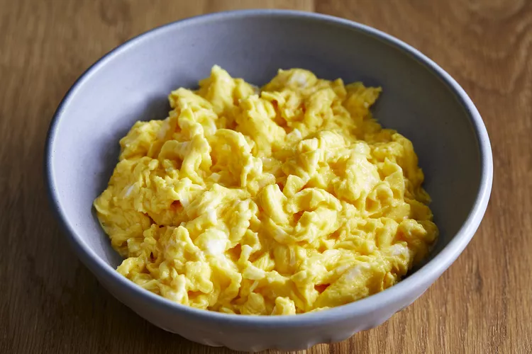

Fluffy Microwave Scrambled Eggs

Scrambled eggs is a dish made from eggs (usually chicken eggs) stirred, whipped or
beaten together while being gently heated, typically with salt, butter, oil and
sometimes other ingredients.
Ingredients
- 4 eggs
- ¼ cup milk
- ⅛ teaspoon salt
Steps
-
Break the eggs into a microwave-proof mixing bowl. Add milk and salt; mix well.
-
Pop the bowl into the microwave and cook on high power for 30 seconds. Remove
bowl, beat eggs very well, scraping down the sides of the bowl, and return to the
microwave for another 30 seconds. Repeat this pattern, stirring every 30 seconds
for up to 2 1/2 minutes. Stop when eggs have the consistency you desire.
Go back